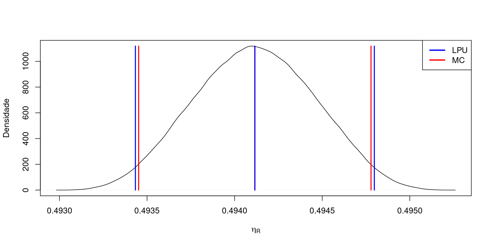
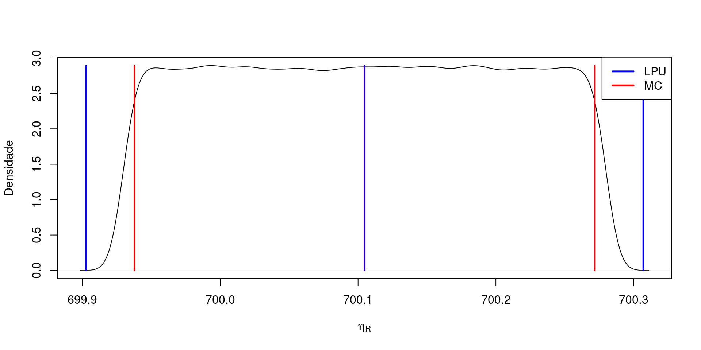
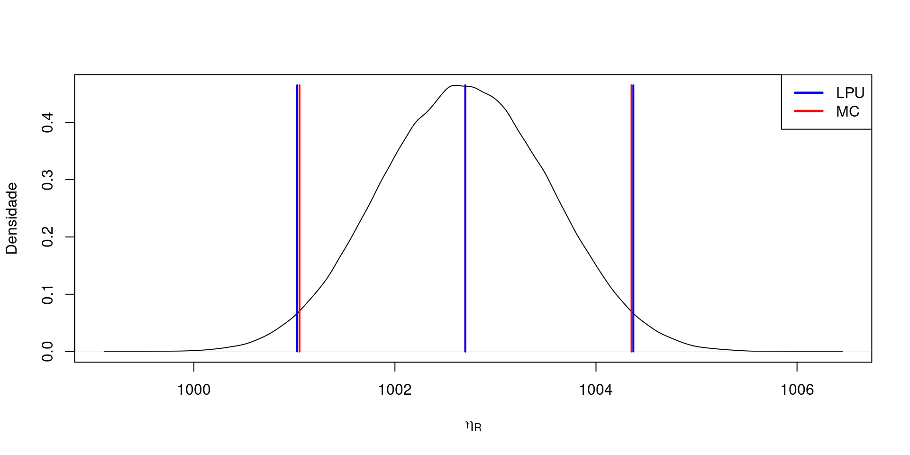
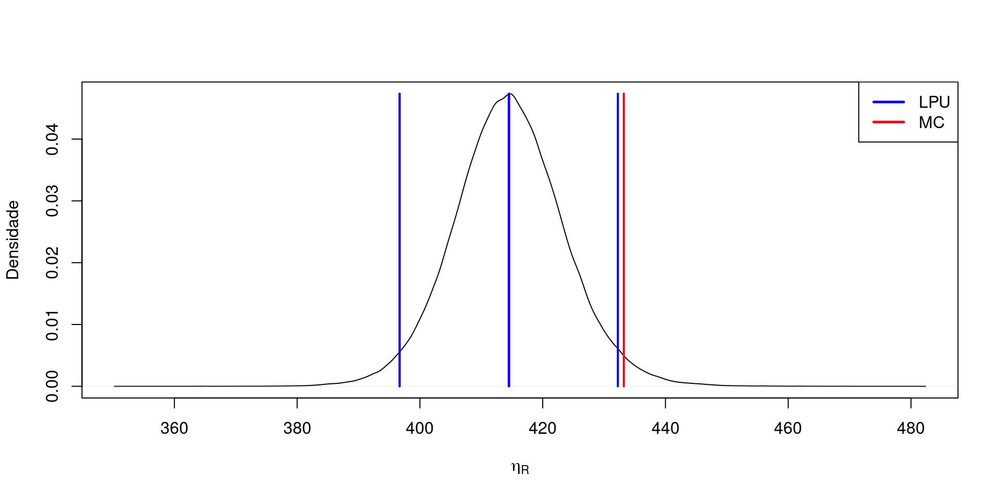
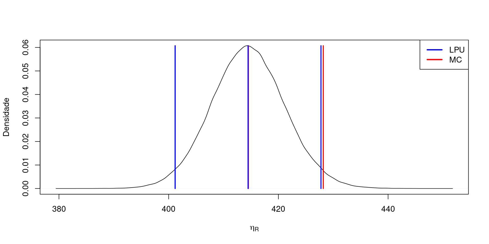

Laboratório de avaliação do cálculo de incertezas indiretas através do método de Monte Carlo fundamento nos casos abordados no livro “Theory and Applications of Monte Carlo Simulations” de Victor (Wai Kin) Chan (ver http://dx.doi.org/10.5772/53014).
Modelo Matemático:
| Fontes | Tipos | FDP | Parâmetros das FDP |
|---|---|---|---|
| Energia livre de Gibbs (\(\Delta G\)) | B | Uniforme | \((237.1\pm0.1)~kJ/mol\) |
| Entalpia padrão (\(\Delta H\)) | B | Uniforme | \((285.8\pm0.1)~kJ/mol\) |
| Voltagem real (\(E_r\)) | B | Uniforme | \(0.7320~V\); Resolução: \(0.001~V\) |
| Voltagem ideal (\(E_i\)) | B | Uniforme | \((1.229\pm0.001)~V\) |
| Valores | |
|---|---|
| \(\eta_R\) | 0.494115557033459 |
| \(c*U\Delta G\) | 0.000120319590832581 |
| \(c*U\Delta H\) | -0.0000998172672722357 |
| \(c*UE_r\) | 0.000194861851000034 |
| \(c*UE_i\) | -0.000232121846919487 |
| \(U\) | 0.000341016104570283 |
| \(\nu\) | Inf |
| \(t\) | 2.0000024438996 |
| \(U_{exp}\) | 0.000682033042549688 |
| LEP | 0.493452016601167 |
| HEP | 0.494778754432065 |
| \(\delta_1\) | 0.00005 |
| \(\delta_2\) | 0.000005 |
| DH | 0.000018835643943893 |
| DL | 0.0000184926102576588 |
| 1 Algarismo Significativo | TRUE |
| 2 Algarismos Significativos | FALSE |
| RM | 0.4941 +/- 0.0007 |

Modelo Matemático:
onde: \(m_c=m_{Re}+m_{Cal}\)
| Fontes | Tipos | FDP | Parâmetros das FDP |
|---|---|---|---|
| Massa (\(m_{Re}\)) | A | t-Student | \(35.7653~kg\); \(s=0.3~g\); \(N=10\) |
| Massa (\(m_{Cal}\)) | B | Normal | \(\pm0.1~g\) e \(k=2\) |
| Gravidade (\(g\)) | B | Normal | \((9.7874867\pm0.0000004)~m/s^2\) e \(k=2\) |
| Comprimento (\(L\)) | B | Normal | \((1999.9955\pm0.008)~mm\) e \(k=2\) |
| Valores | |
|---|---|
| \(Torque\) | 700.103220907229 |
| \(c*uM_{Re}\) | 0.00185704085408498 |
| \(c*uM_{Cal}\) | 0.000978746467815493 |
| \(c*uG\) | 0.00001430608781123 |
| \(c*uL\) | 0.00140020959228604 |
| \(U\) | 0.00252335826795964 |
| \(\nu\) | 30 |
| \(t\) | 2.08684705353665 |
| \(U_{exp}\) | 0.00526586276650893 |
| LEP | 700.097778483575 |
| HEP | 700.108681077913 |
| \(\delta_1\) | 0.0005 |
| \(\delta_2\) | 0.00005 |
| DH | 0.000194307918036429 |
| DL | 0.000176560886870902 |
| 1 Algarismo Significativo | TRUE |
| 2 Algarismos Significativos | FALSE |
| RM | 700.103 +/- 0.005 Nm |
onde: \(m_c=m_{Re}+m_{Cal}\)
| Fontes | Tipos | FDP | Parâmetros das FDP |
|---|---|---|---|
| Massa (\(m_{Re}\)) | A | t-Student | \(35.7653~kg\); \(s=0.3~g\); \(N=10\) |
| Massa (\(m_{Cal}\)) | B | Normal | \(\pm0.1~g\) e \(k=2\) |
| Gravidade (\(g\)) | B | Normal | \((9.7874867\pm0.0000004)~m/s^2\) e \(k=2\) |
| Comprimento (\(L\)) | B | Uniforme | \(2000.0~mm\); Resolução: \(1~mm\) |
| Valores | |
|---|---|
| \(Torque\) | 700.10479614302 |
| \(c*uM_{Re}\) | 0.00185704503243631 |
| \(c*uM_{Cal}\) | 0.00097874867 |
| \(c*uG\) | 0.00001430612 |
| \(c*uL\) | 0.10105142312853 |
| \(U\) | 0.101073225367443 |
| \(\nu\) | 78976388 |
| \(t\) | 2.00000247555473 |
| \(U_{exp}\) | 0.202146700947187 |
| LEP | 699.937743310318 |
| HEP | 700.271826361037 |
| \(\delta_1\) | 0.05 |
| \(\delta_2\) | 0.005 |
| DH | 0.0351164829297659 |
| DL | 0.0350938682453261 |
| 1 Algarismo Significativo | TRUE |
| 2 Algarismos Significativos | FALSE |
| RM | 700.1 +/- 0.2 Nm |

Modelo Matemático:
| Fontes | Tipos | FDP | Parâmetros das FDP |
|---|---|---|---|
| Pureza (\(P\)) | B | Uniforme | \(99.99\%\pm0.01\%\) |
| Massa (\(m\)) | B | Normal | \(100.28~mg\); \(s=0.05~mg\) |
| Volume (\(V_f\)) | B | Triangular | \(100.0\pm0.1~mL\) |
| Volume (\(V_r\)) | A | Normal | \(s=0.02~mL\); \(\nu=4\) |
| Volume (\(V_t\)) | B | Uniforme | \(\pm0.084~mL\) |
| Valores | |
|---|---|
| \(C_{Cd}\) | 1002.69972 |
| \(c*uP\) | 0.0578966849943357 |
| \(c*um\) | 0.49995 |
| \(c*uVf\) | -0.409350446538594 |
| \(c*uVr\) | -0.200539944 |
| \(c*uVt\) | -0.486283520737024 |
| \(U\) | 0.835199226768439 |
| \(\nu\) | 1203 |
| \(t\) | 2.00208270628628 |
| \(U_{exp}\) | 1.67213792821676 |
| LEP | 1001.05092252361 |
| HEP | 1004.35384543814 |
| \(\delta_1\) | 0.05 |
| \(\delta_2\) | 0.005 |
| DH | 0.0180124900732608 |
| DL | 0.0233404518231737 |
| 1 Algarismo Significativo | TRUE |
| 2 Algarismos Significativos | FALSE |
| RM | 1003 +/- 2 mg/L |

Modelo Matemático:
| Fontes | Tipos | FDP | Parâmetros das FDP |
|---|---|---|---|
| Força (\(F\)) | B | Normal | \(29400~N\pm2\%\) e \(k=2\) |
| Diâmetro (\(D\)) | B | Normal | \((10.00\pm0.01)~mm\) e \(k=2\) |
| Marcação (\(d\)) | B | t-Student | \(3~mm\); \(s=0.079~mm\); \(N=10\) |
| Valores | |
|---|---|
| \(HB\) | 414.472921031433 |
| \(c*uFo\) | 4.14472921031433 |
| \(c*uD\) | 0.010006378658829 |
| \(c*udf\) | -7.06955940816935 |
| \(U\) | 8.19497105425532 |
| \(\nu\) | 16 |
| \(t\) | 2.16894299567741 |
| \(U_{exp}\) | 17.7744250679062 |
| LEP | 396.683897592822 |
| HEP | 433.217530546097 |
| \(\delta_1\) | 0.5 |
| \(\delta_2\) | 0.05 |
| DH | 0.970184446757628 |
| DL | 0.0145983707044479 |
| 1 Algarismo Significativo | FALSE |
| 2 Algarismos Significativos | FALSE |
| RM | 414 +/- ? HB |

Neste caso tem-se que verificar qual ou quais as incertezas devem ser reduzidas para permitir ao menos a apresentação do resultado com 1 Algarismo Significativo. Como primeira hipótese sugere-se testar o sensor que mais influencia na incerteza combinada que neste caso é relativo ao sensor da medida \(d\).
No caso abaixo foram realizadas 20 medidas do diâmetro \(d\). A proposta de alteração de sensor mais adequada depende do resultado da simetria do resultado final em Monte Carlo e a disponibilidade de sensores com a incerteza desejada.
| Valores | |
|---|---|
| \(HB\) | 414.472921031433 |
| \(c*uFo\) | 4.14472921031433 |
| \(c*uD\) | 0.010006378658829 |
| \(c*udf\) | -4.99893339751771 |
| \(U\) | 6.49370583467288 |
| \(\nu\) | 54 |
| \(t\) | 2.04736751036537 |
| \(U_{exp}\) | 13.2950023477793 |
| LEP | 401.181396711389 |
| HEP | 428.181059151272 |
| \(\delta_1\) | 0.5 |
| \(\delta_2\) | 0.05 |
| DH | 0.413135772060059 |
| DL | 0.00347802773507055 |
| 1 Algarismo Significativo | TRUE |
| 2 Algarismos Significativos | FALSE |
| RM | 410 +/- 10 HB |

Copyright © 2020 Guilherme Kunz, Inc. All rights reserved.